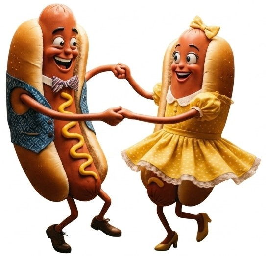
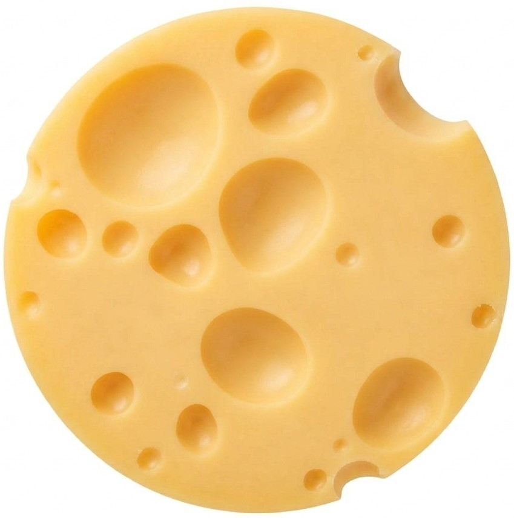
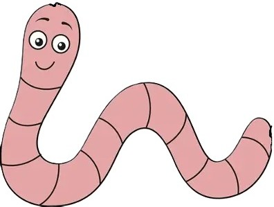
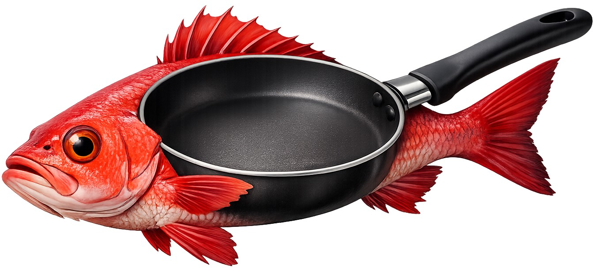
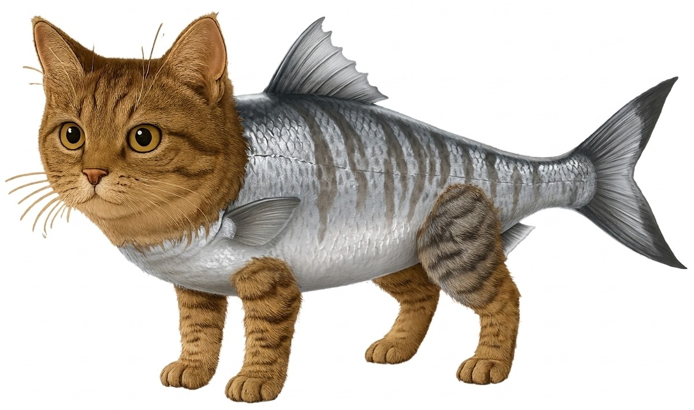
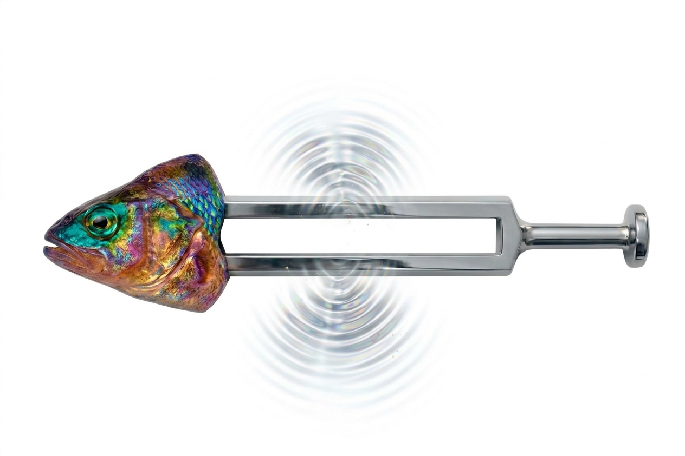

Visual Mnemonics are a type memory system technique that pairs information with mental visual images to enhance memory recall. They are one of the most common memory system techniques that experienced memory experts (mnemonists) use. They very versitle and can be used with any type of information as discussed further below.
There are two key components of visual mnemonics:
AD
AD
Human memory is strongly visual. Seeing something forges a much stronger memory than reading about something. Visual mnemonics takes advantage of this by attaching information needing to be remembered to a mental visual image. These images created in the mind can be as vivid and detailed as actual visual images.
Fortunately creating a mental visual image of information also creates a strong memory just like an actual visual image seen with the eye itself. Mental visual images can be subsituted for words, actions and even numbers (Lorayne and Lucas chapters 2 &3).
There are several helpful hints when forming a mental visual image for a bit of information:
When creating mental visual images of information there are two general categories of information:
Tangible information is information such as hotdogs where a mental visual image of hotdogs can be readily mentally seen. Just mentally visualizing hotogs could suffice but the image of the hotdogs would be stronger if ridiculously modified somehow such as two hotdogs dancing (Lorayne and Lucas chapter 4).

Intangible information is information where there is not an exact mental visual image readily available. In this situation a subsitute mental visual image is needed to represent the information. An example of intangible information in the Fish Baits algorithm the information nighttime requires a substitute mental image as there is no exact image of a nighttime. There are numerous mental visual images that one could use such as stars but the one that came to my mind was a moon made out of swiss cheese with the cheese's eyes (holes) being craters.

Substitute mental visual image may initially sound difficult and abstract but with practice and imagination there is not any information for which a substitute mental visual image cannot be made.
Numbers are a perfect example of intangible information that can be made tangible with subsitute mental visual images. These are the most complex to learn but have so many daily uses the learning is very worth it. Numbers will be discussed seperately on the next pages but it might be best if you are completely new to these memory sytem techniques to skip them for now and go straight to the Associations: Links page (Lorayne and Lucas chapter 4 & *).
Now we can practice making some initial mental visual needed for the Fish Baits algorhithm. Remember the mental visual images I choose are an example and very likely would be different from what another would choose. Again the important thing is to create images that are your own and if possible make them rediculous in some way!
Referring back to the Mind Mapping page the algorithm started with the main topic, Fish Baits. Growing up I remember fishing mostly with earthworms so an image of a happy smiling earthworm reminds me of Fish Baits. This also will be my starting image which is what I think of to start the "Fish Baits Algorithm":

Next there were the three main branches that need mental visual images. Panfish (a fish with a sizzling hot frying pan body), Catfish (a fish with a cat's head and legs), and Tuna Fish (a fish with a vibrating tuning fork for a body).



The additional information that pertains to Fish Baits, Panfish, Catfish, and Tuna Fish will be associated in the form of mental visual images in the Links page.
AD
AD
It is nice to create strong mental visual images of information but these mental visual images just sitting in ones mind does not help much. This is where associations come into play.
Mental visual image associations are very important for 2 reasons:
There are two basic methods of associating for mental visual images of information with other mental visual images:
Links and the methood of loci will be covered in the next several pages.
AD
AD